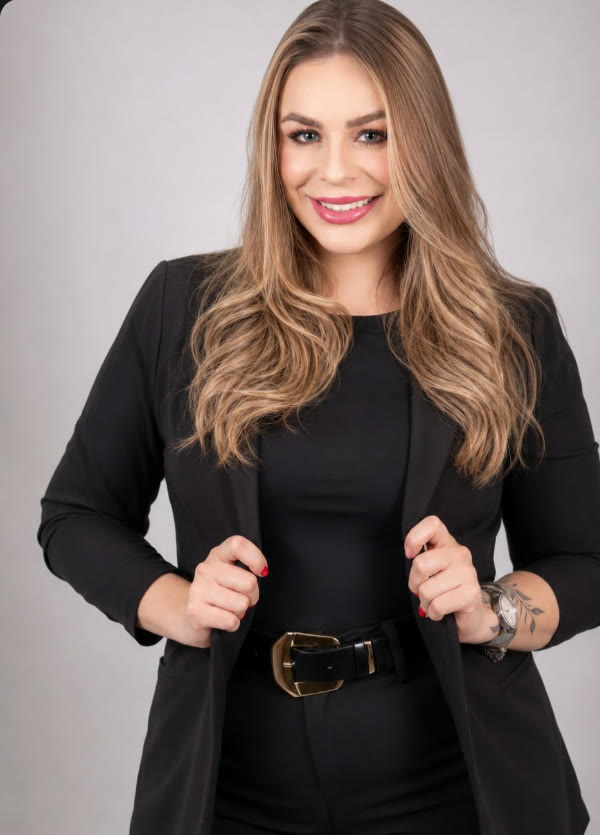

Técnico em Enfermagem
O início de uma trajetória dedicada ao cuidado e ao contato próximo com pessoas.
Sobre
Conhecimento, escuta e atenção aos detalhes conduzem cada atendimento da Dra. Larissa.

Trajetória
Desde cedo, a área da saúde esteve presente em seus planos. Antes da Odontologia, Larissa cursou Técnico em Enfermagem — uma experiência que ajudou a formar seu olhar humano e cuidadoso.
Em 2023, concluiu a graduação em Odontologia depois de conciliar estudos, trabalho e maternidade. Desde então, segue aprofundando seus conhecimentos, com estudos em Harmonização Facial, Ortodontia e Implantodontia.
Hoje, leva para cada atendimento aquilo em que acredita: conhecimento, segurança, cuidado e acolhimento.
Formação contínua
O início de uma trajetória dedicada ao cuidado e ao contato próximo com pessoas.
A consolidação de uma escolha profissional construída com dedicação e propósito.
Estudos contínuos para ampliar possibilidades de planejamento e cuidado odontológico.
Filosofia
Compreender expectativas, características e objetivos é parte essencial de cada avaliação.
O planejamento busca valorizar traços naturais, sem apagar aquilo que torna cada pessoa única.
Informação clara, atenção aos detalhes e acolhimento acompanham todo o atendimento.
O consultório
O consultório da Dra. Larissa foi pensado como um lugar de atendimento próximo, tranquilo e acolhedor. Um ambiente onde cada pessoa pode conversar com calma sobre suas necessidades e compreender as possibilidades de cuidado.
Como chegarAgende sua avaliação
Entre em contato pelo WhatsApp e consulte a disponibilidade.
Falar com a equipe